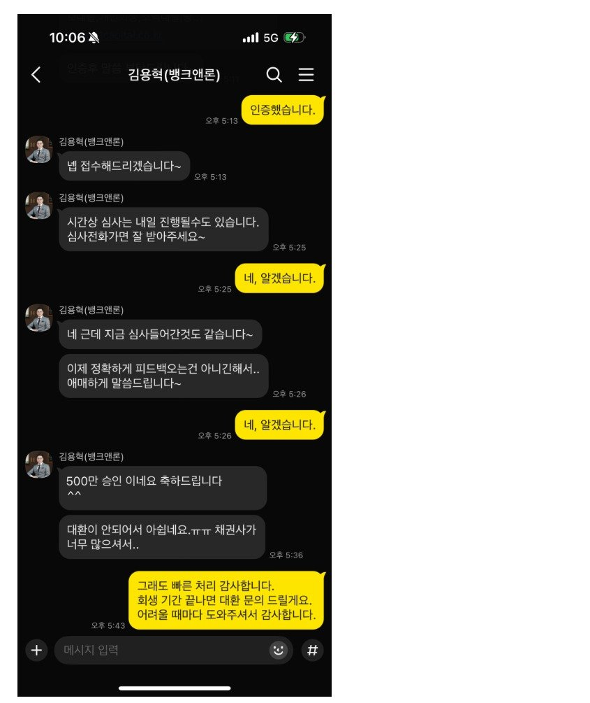

[개인회생자대출 ] 김용혁 이사님, 이현섭 과장님 감사합니다!

-재직형태: 직장인
-재직기간: 5년 1개월
-사대보험 가입유무: 유
-소득: 연 3600만원
-신용등급: 개인회생 중
-채무내역: 대부 2건 1400만원
-필요서류: 신분증, 원초본, 급여통장 입출금 거래내역 3개월, 건강보험자격득실확인서, 건강보험납부확인서(장기요양 포함), 통장사본, 개인회생 채권자 목록
2023년 3월에 인가 결정이 나고, 총 36회 중 34회차 납부 중에 대부업 대출 2건을 통합하고 여유자금 확보를 위해 문의드렸습니다.
4대보험 적용되는 직장인으로 급여는 세후 275만원, 변제금은 43만원씩 납부하고 있었고, 1회 미납이 있었습니다.
처음에는 채무통합으로 진행했는데, 채권사가 많아서 최종 부결되고 대신 여유자금 500만원을 확보했습니다.
회생 마치고 채무통합으로 다시 도움 받으려 합니다. 오랫동안 신뢰할 수 있는 카페를 운영해 주셔서 감사합니다.